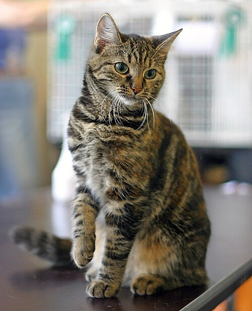
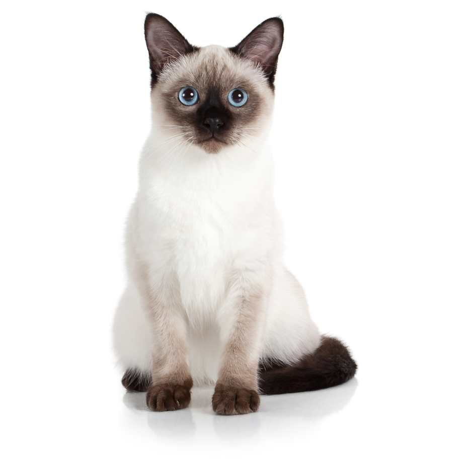

Diversidad felina


Razas Populares
Cada raza tiene una historia, temperamento y necesidades únicas. Aquí te presentamos algunas de las más queridas en el mundo.

Europeo Común
El más adaptable y resistente. Personalidad afectuosa e independiente. Ideal para familias.
Persa
Famoso por su pelaje largo y sedoso y su carácter tranquilo. Requiere cepillado diario y mucho cariño.
Maine Coon
El gigante gentil. Puede superar los 8 kg, es juguetón y se lleva bien con perros y niños.

Siamés
Voz potente, inteligencia aguda y apego profundo a su familia humana. Uno de los más comunicativos.